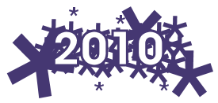

1 janvier 2010
Nouvelle année


2009 se finit bien et 2010 commence plutôt bien aussi :- J'ai finalement réussi à compiler Wiktionary FR pour le WikiReader ! (téléchargement dans un post très bientôt)
- J'ai reçu un des plus beau cadeau de ma vie : un tableau dédicacé de mon meilleur ami Rudy
- Mozilla a sorti la version RC1 de Firefox Mobile
- POTI a sorti une nouvelle version de Songbird, le logiciel multimédia par excellence ;) (Plus d'informations sur Frenchbirds)
- Le film Avatar est purement génial, je ne me lance pas dans une critique, allez le voir... c'est tout. (Après l'avoir vu une 2ème je suis toujours aussi émerveillé.)
- Je suis en train de jouer à Zelda : Spirits Tracks sur Nintendo DS, le jeu est sympa mais la difficulté à été revue a la baisse :( : On se retrouve avec des donjons plutôt courts et des énigmes plus faciles. Les graphismes restent géniaux et on voit que la DS à toujours un potentiel inexploité par d'autre jeux ;)
- J'ai gagné des T-shirts LookZippy ! Je me permets de lui faire un peu de pub, surtout que les motifs sont vraiment originaux et que les textiles utilisés sont 100 % écologiques et équitables ! :)
- A propos de concours, j'ai quelques petites idées et il se peut que je fasse un concours prochainement sur mon blog ou celui de Frenchbirds

Commentaires 1